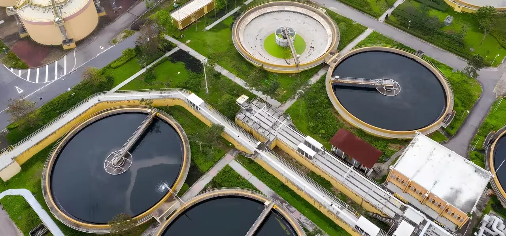

Nagpur, India – July 2025
Technology and engineering firm CS TECH Ai (Ceinsys Tech Ltd.) has been selected as the Project Management Consultant (PMC) for a large-scale wastewater modernization initiative in the city of Nashik, India. The contract will support the development and long-term operation of a multi-site sewage treatment system serving a population of over 2 million.
The initiative is part of a national push across Indian cities to strengthen environmental safeguards, improve sanitation infrastructure, and address untreated wastewater that flows into local water bodies.
Digitally-Enabled Urban Sanitation Program
CS TECH Ai will provide project oversight for the upgrade and integration of four major sewage treatment plants (STPs), a decentralized membrane bioreactor (MBR) unit, and over two dozen pumping stations. The firm will also help deploy a central SCADA-enabled command center that allows the city to monitor flow, capacity, and performance in real time – essential for operational transparency and regulatory compliance.
The project is being executed under a public-private partnership (PPP-HAM) model and includes a 25-year operation and maintenance commitment – signaling a shift toward long-term lifecycle accountability in India’s public infrastructure programs.
“Managing infrastructure at this scale means connecting data, timelines, and outcomes. Our role is to ensure Nashik’s vision translates into measurable results – on ground and over time,” said Prashant Kamat, CEO, CS TECH Ai.
This program is especially important for Nashik, a fast-growing industrial and religious center located in the western state of Maharashtra. Like many urban centers in emerging economies, Nashik faces growing pressures on its water infrastructure due to population growth, urbanization, and environmental mandates.
Enabling Smart Sanitation at Scale
The PMC role involves coordinating contractors, monitoring project milestones, ensuring quality control, and verifying adherence to environmental standards. CS TECH Ai’s engagement is expected to serve as a model for digitally managed utility systems in other Tier-2 cities across India and other emerging markets.